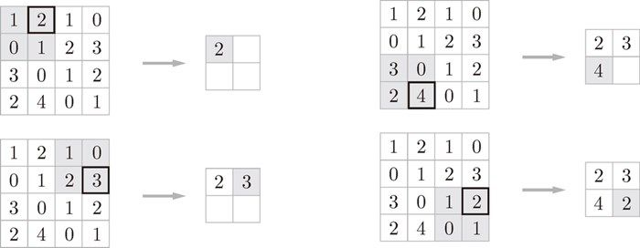
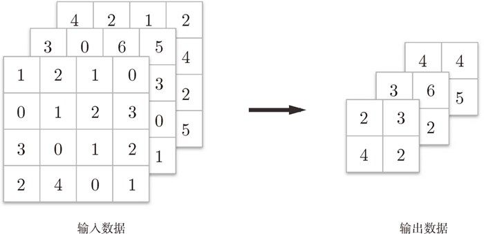
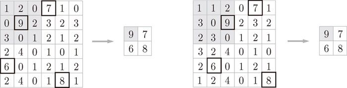

除了 Max 池化之外，还有 Average 池化等。相对于 Max 池化是从目标区域中取出最大值，Average 池化则是计算目标区域的平均值。在图像识别领域，主要使用 Max 池化。因此，本书中说到“池化层”时，指的是 Max 池化。
除了 Max 池化之外，还有 Average 池化等。相对于 Max 池化是从目标区域中取出最大值，Average 池化则是计算目标区域的平均值。在图像识别领域，主要使用 Max 池化。因此，本书中说到“池化层”时，指的是 Max 池化。
池化是缩小高、长方向上的空间的运算。比如，如图 7-14 所示，进行将 2 × 2 的区域集约成 1 个元素的处理，缩小空间大小。

图 7-14 Max 池化的处理顺序
图 7-14 的例子是按步幅 2 进行 2 × 2 的 Max 池化时的处理顺序。“Max 池化”是获取最大值的运算，“2 × 2”表示目标区域的大小。如图所示，从 2 × 2 的区域中取出最大的元素。此外，这个例子中将步幅设为了 2，所以 2 × 2 的窗口的移动间隔为 2 个元素。另外，一般来说，池化的窗口大小会和步幅设定成相同的值。比如，3 × 3 的窗口的步幅会设为 3，4 × 4 的窗口的步幅会设为 4 等。
池化层有以下特征。
没有要学习的参数
池化层和卷积层不同，没有要学习的参数。池化只是从目标区域中取最大值（或者平均值），所以不存在要学习的参数。
通道数不发生变化
经过池化运算，输入数据和输出数据的通道数不会发生变化。如图 7-15 所示，计算是按通道独立进行的。

图 7-15 池化中通道数不变
对微小的位置变化具有鲁棒性（健壮）
输入数据发生微小偏差时，池化仍会返回相同的结果。因此，池化对输入数据的微小偏差具有鲁棒性。比如，3 × 3 的池化的情况下，如图 7-16 所示，池化会吸收输入数据的偏差（根据数据的不同，结果有可能不一致）。

图 7-16 输入数据在宽度方向上只偏离 1 个元素时，输出仍为相同的结果（根据数据的不同，有时结果也不相同）